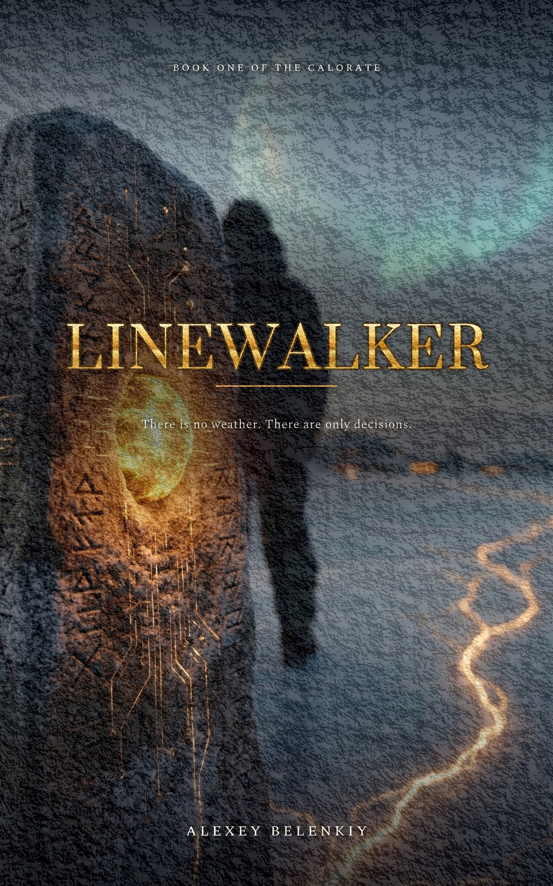

Linewalker
彼女は〈四分〉と査定され、脇へ置かれた。それが最初の過ちだった。

- シリーズ
- The Calorate · 01
- ページ
- 243
- 状態
- 予約受付中
- 発売日
- 2026年10月1日
ヴェヤ・マーンは標石の熱を素の二本指で読む。石は熱について嘘をつかないからだ。惑星ヴェシュに天候はなく、あるのは保守だけ。世界の核は何世紀も前に穿たれ、その熱は脈管を通って、金を払うどこかの世界の早い春のために送り上げられる。線路守たちは最後の管を手作業で保ち、町が闇の中で死なないようにしている。彼女は家族の誇りになるはずだった。幼い日の検定事故で半身を焼かれ、配線を誤って癒えた彼女を、ギルドの計器は〈四分〉と査定し、傷物として脇へ置いた。やがて十分の一税の検定が下り、弟のヨレンが〈真〉と出る。ひとりの弟と、町全体の一世代分の熱脈。ヨレンは自分で計算を済ませ、公正な値をつけ、自ら赴く。ヴェヤはその計算を受け入れない。彼女は、その年の〈蝋燭〉を寒さの外へ運ぶ艀に忍び込む。甲板の上では、艀は典礼。その下では、配管だ。導管に組み込まれていたものは、朝までに町ひとつを凍らせずには引き抜けない。ひとりの人間は、いくらまで費やしてよいのか。
気候
ディストピア
予約注文